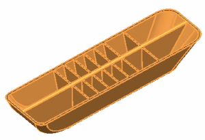

Midsurface the thin ribs
The Midsurface by Face Pairs dialog box is still open from the previous step.
Set the face pairing Strategy to Thickness to have the software automatically pair faces according to their thickness.
-
Face Pairing
-
Strategy
Thickness

-
3
-
By specifying a search distance of 3 mm, the software will pair faces separated by 3 mm or less. However, faces that have already been paired are excluded from the search.
-
 Automatically Create Face Pairs
Automatically Create Face Pairs -

-
The thin ribs are now midsurfaced. Leave the Midsurface by Face Pairs dialog box open for the next step where you midsurface the center rib.